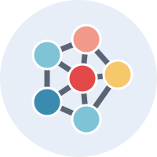

Temas de orientação
Graduação (TCC e iniciação científica) e pós-graduação. Atualizado em 05/10/2026.
Esta lista reúne temas de interesse com encaminhamento bem definido, nas grandes áreas de Redes de Computadores e Cibersegurança. Outros temas nessas linhas podem ser discutidos. Se algum tema despertou seu interesse, entre em contato.

Cibersegurança
- 6G: IA/ML aplicado à segurança do 6G
- 5G: segurança em 5G com NWDAF (Network Data Analytics Function)
- Zero Trust (NIST SP 800-207): autenticação contínua e de contexto, por exemplo no 5G, em e-health e em sistemas de IA agêntica
- Privacidade em aprendizado federado (Federated Learning)
- Sistemas de detecção de intrusão e DPI (Deep Packet Inspection)

Redes de Computadores
- Aplicação: aplicações para 5G/6G
- Enlace e física: localização de pessoas e objetos por Wi-Fi (IEEE 802.11 FTM ou CSI, Channel State Information)
- 5G/6G e O-RAN: orquestração de recursos no Core 5G; xApps e rApps com IA no O-RAN
- Outros: XaaS (qualquer coisa como serviço)
Linhas em que os temas se encaixam

5G/6G e O-RAN
Segurança de redes e Zero Trust

IA aplicada a redes

Gestão de identidade e acesso

Sensoriamento e localização Wi-Fi